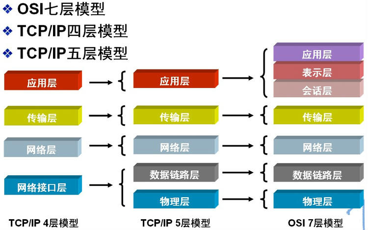
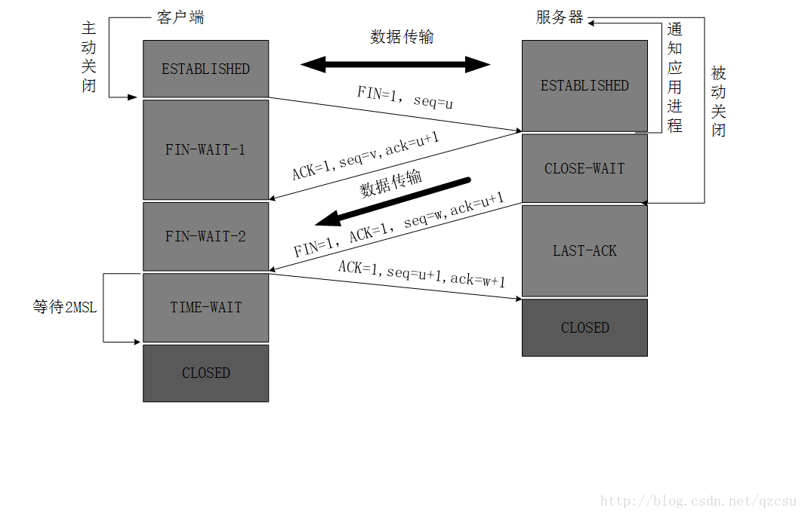
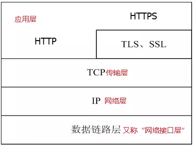
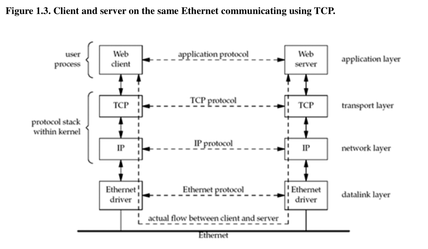
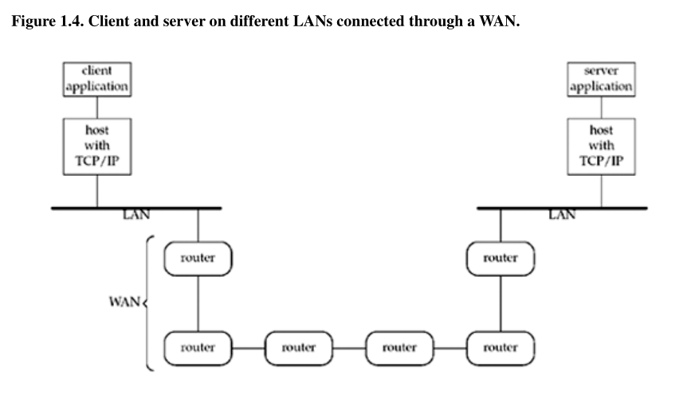

网络
摘自《程序员面试白皮书》
网络分层
计算级之间的交互模型通常是指Open System Interconnection model (OSI), 该模型将网络通信系统抽象成了七层。因其不太实用，工业界普遍使用简化的TCP/IP五层模型。

- 应用层 针对特定的协议，为应用程序做服务,比如SMP,POP3,SSH,FTP等协议。
- 表示层 负责数据格式的转换，把不同表现形式的信息转换成适合网络传输的格式。
- 会话层 负责建立和断开通信连接，什么时候建立连接，什么时候断开连接以及保持多久的连接。
- 传输层 在两个通信节点之间负责数据的传输，起着可靠传输的作用。(运行在这一层的设备有四层交换机，四层路由器)
- 网络层 路由选择，在多个网络之间转发数据包，负责将数据包传送到目的地址。(运行在这一层的设备有路由器，三层交换机)
- 数据链路层 负责物理层面互联设备之间的通信传输，比如一个以太网相连的两个节点之间的通信，是数据帧与1、0比特流之间的转换。(运行在这一层的设备是网桥、以太网交换机、网卡)
- 物理层 主要是1、0比特流与电子信号的高低电平之间的转换。(运行在这一层的设备是中继器、双绞线)
Tip
HTTP位于应用层，TCP/UDP位于传输层，IP协议位于网络层。
路由
从用户角度看，路由（routing）是指将数据从一个用户终端，通过网络节点（例如路由器、交换机等），发送到另一个用户节点的过程。理论上说，对于一个拥有多个节点的拓扑网络而言，路由是指在Network Layer（OSI model的第三层）将数据包（data packet）从一个节点以最优的路径发送到目标节点的实现方法。其核心包括：如何获得邻近节点的信息，如何估计链路质量，如何寻址，如何构建网络拓扑等等。通过路由器之间的路由协议（routing protocol）可以实现两个网络节点之间信息（包括网络域名，邻近节点，链路质量等）的交换和散布，通过不断重复该过程，每个节点都会获得足够多关于所在网络的拓扑信息。当有数据包需要传送时，路由器再通过路由算法（routing algorithm）计算传递当前数据包的最优路径，并把数据包发送给下一个邻近节点。许多路由算法基于图理论，实现了最小生成树，最短路径等等经典的拓扑算法。
网络中，所谓地址是指IP地址，IPv4规定利用32bits作为IP地址（即4bytes，也就是我们常看到的x.x.x.x，x在0-255之间，2^8-1=255）。但随着网络设备的增多，IPv4已经不能满足人们的需求，故互联网逐渐向IPv6进行演进，IPv6利用128bits作为IP地址。
事实上，直观而言，network routing的过程就相当于传统意义上的邮包寄送，IP地址可以类比于邮政编码，路由器就相当于邮局，通过目的地邮政编码与邮局系统中的递送路径进行比较，由此确定下一步应该把当前包裹传递到哪里。
网络统计指标
带宽/速率（Bandwidth/Rate）
所谓带宽是指一个网络节点能以多快的速度将数据接收/发送出去，单位时bits per second（bps）。对于实时性要求不高的数据，例如下载等，带宽时影响用户体验的主要因素。两个终端节点之间的带宽由路径中所有节点的最小带宽决定。同时，重算的数据发送速度不应超过当前的上载带宽，否则会对网络造成压力导致拥塞（congestion）。
One-way Delay/Round Trip Time
One-way Delay用以衡量网络的延迟。假设在时间点A从一个节点发送数据到另一个节点，目的节点在时间B收到数据，则两个时间点之差即为One-way Delay. 类似的，RTT则是数据完成一个Round Trip回到始发节点的时间差，一般RTT可以近似估计为One-way Delay的两倍。对于网络会议，IP电话等，延迟时影响用户体验的主要因素。延迟可能是由网络中某个节点处理数据速度慢，突然有大规模数据需要传输，或者某条链路不断重传数据造成的。延迟与带宽有一定的相关性，但没有必然联系。
TCP vs. UDP
在Transport Layer，数据流被分块传输。最常见的协议是TCP和UDP。
TCP
Reliable Protocol TCP（Transmission Control Protocol）是一种可靠的传输协议，在网络条件正常的情况下，TCP协议能够保证接收端收到所有数据，并且接受到的数据顺序与发送端一致。TCP通过在发送端给每个数据包分配单调递增的sequence number，以及在接收端发送ACK（acknowledgement）实现可靠传输。每个发送的数据包都包含序列号，当接收端收到数据包时，会发送ACK告诉发送端当前自己期待的下一个序列号是多少。例如，发送端分别发送了序列号为99、100、101、102的四个数据包，接收端收到数据包99后，会发送ACK 100，意味着接收端期待下一个数据包编号100. 如果由于某些原因，数据包100没有到达接收端，但数据包101、102到达了，那么接收端会继续发送ACK 100. 当发送端发现当前发送的数据包编号超过了100，但接收端仍然期望收到100，那么发送端就会重新发送数据包100. 如果接收端收到了重新发送的数据包100，那么接收端会回复ACK 103，继续进行剩下的数据传输，并且把数据包99、100、101、102按顺序传递给上一层。
Flow Control TCP使用了end-to-end flow control以避免发送端发送数据过快导致接收端无法处理。TCP采用了滑动窗口（sliding window）实现流量控制。 接收端通过ACK告诉发送端自己还能接收多少数据，发送端不能发送超过该值的数据量。当接收端返回的窗口大小为0时，发送端停止发送数据，直到窗口大小被更新。由于ACK是由发送端发送的数据触发，可能接收端窗口已经打开，但是由于发送端已经停止发送，故接收端没有机会通过ACK告知发送端新的窗口大小，在这种情况下会造成死锁。在实际实现中，发送端会设置一个timer，如果timer到期，发送端会尝试发送小数据包，以触发接收端ACK.
Congestion Control 为了控制传输速度防止堵塞网络，并且在网络容量允许的范围内尽可能多的传输数据，TCP引入congestion control，用以判断当前的网络负荷，并且调整传输速率。TCP通常采用additive increase， multiplicative decrease的算法，即如果按时收到对应的ACK，则下一次传输速率线性增加，否则视为发生了网络拥塞，下一次传输的比特数折半。所谓的“按时”基于RTT：发送端会估计RTT，并且期望当数据包发送以后，在RTT时间内收到对应的ACK。现在TCP需要分别实现slow-start，congestion avoidance，fast retransmit和fast-recovery，以达到最高的效率。
UDP
相比与TCP，UDP（User Datagram Protocol）简单许多：连接建立时不需要经过类似于TCP的三次握手，只需要知道接收端的IP和端口，发送端就可以直接发送数据。同时，UDP也没有ACK，flow control和congestion control，故UDP相较TCP传输更快，使用起来更简单。
UDP介绍
摘自《计算机网络 第四版》
UDP面向无连接，它传输的数据段（segment）是由8字节的头和净荷域构成的。头包含源端口和目标端口，各占16位，共4字节。两个端口分别被用来标识源机器和目标机器内部的端点。当一个UDP分组到来的时候，它的净荷部分被递交给与目标端口相关联的那个进程。这种关联关系是在调用了bind原语或者其他某一种类似的做法之后建立起来的。实际上，采用UDP而不是原始的IP，其最主要的价值是增加了源端口和目标端口。如果没有端口域，则传输层将不知道该如何处理分组；而有了端口之后，它就可以正确地提交数据段了。
当目标端必须将一个应答送回给源端地时候，源端口是必须地。发送应答的进程只要将进来的数据段中的source port域复制道输出的数据段中的destination port域，就可以指定在发送方机器上由哪个进程来接受应答。
另外值得提出来的可能是UDP没有做到一些事情。UDP并不考虑流控制、错误控制，在收到一个坏的数据段之后它也不重传。所有这些工作都留给用户进程。UDP所作的事情就是提供一个接口，并且在接口中增加复用（demultiplexing）的特性。他利用端口的概念将数据段解复用到多个进程中。这就是它所做的全部工作。
UDP尤其适用域C-S架构下，客户端给服务器发送一个短的请求，并且期望一个短的应答回来，如果请求或者应答丢失，只需要超时重传。
UDP的一个应用时DNS（Domain Name System），简单来说，如果一个程序需要根据某一个主机名（比如www.cs.berkeley.edu）来查找它的IP地址，那么，它可以给DNS服务器发送一个包含该主机名的UDP分组。服务器用一个包含该主机IP地址的UDP分组作为应答。实现不需要建立连接，事后也不需要释放连接。在网络上只要两条消息就够了。DNS在进行区域传输(主从dns server之间的数据同步)的时候使用TCP，普通的查询使用UDP。因为普通查询数据量小，比较适合用udp这种速度更快。
RPC
从某种意义上讲，向一台远程主机发送一个消息并获得一个应答，就如同在编程语言中执行一个函数调用一样。在这两种情况下，你都要提供一个或多个参数，然后获得一个结果。这种现象导致人们试图将网络上的请求-应答交互过程，做成像过程调用那样可以进行类型匹配和转换。这样的结构是的网络应用更加易于编程，而且人们对这种处理方式也更加熟悉。例如，假设有一个名为getIPaddress(hostname)的过程，它的工作方式为：向DNS服务器发送一个UDP分组，然后等待应答，如果在规定的时间内没有接收到应答的话，则超时并重试。通过这种方式，网络的所有细节对于程序员而言全部隐藏。
这个领域中的关键工作由Birrel和Nelson（1984）完成。简单来说：允许本地的程序调用远程主机上的过程。当机器A上的进程调用机器B上的一个过程的时候，机器A上的调用进程被挂起，而机器B上被调用的过程则开始执行。参数信息从调用方传输到被调用方，而过程的执行结果则从反方向传递回来。对于程序员而言，所有的消息传递都是不可见的。这项技术称为RPC（Remote Procedure Call），目前已成为许多网络应用的基础。按照传统，调用过程称为客户，被调用过程称为服务器。
当然，RPC不一定非得使用UDP分组，但是，RPC和UDP是一对很好的搭档，而且，UDP常常被用于RPC。然而，当参数或者结果值可能超过最大的UDP分组的时候，或者当所请求的操作并不幂等（即不能安全地重复多次执行，比如计数器递增地操作）的时候，可能有必要建立一个TCP连接，然后利用该连接来发送请求，而不是使用UDP来完成远程调用。
RTC
UDP的还被广泛应用在实时多媒体：Internet广播电台、Internet电话、音乐点播、视频会议、视频点播等。人们发现每一种应用都在重复设计几乎相同的实时传输协议，逐渐地人们意识到，为多媒体应用制定一个通用的协议是一个很好的想法，因此就诞生了RTP（Real-time Transport Protocol）。
TCP介绍
UDP是一个简单的协议，它有一些非常合适的用途。但是对于大多数Internet应用来说，他们更需要可靠的，按序递交的特性。所以还需要另一个协议，这就是TCP，目前它是Internet上承担任务最为繁重的一个协议。
TCP是专门为了在不可靠的互联网上提供一个可靠的端到端字节流而设计的。每台支持TCP的机器都有一个TCP传输实体，它或者是一个库过程，或者是一个用户进程，或者是内核的一部分。在所有这些情形下，它管理TCP流，以及与IP层之间的接口。TCP传输实体接受本地进程和用户数据流，并且将他们分割成不超过64KB（在实践中，考虑到每个帧中都希望有IP和TCP头，所以通常不超过1460数据字节）的分片，然后以单独的IP数据报的形式发送每一个分片。当包含TCP数据的数据报到达一台机器的时候，他们被递交给TCP传输实体，然后TCP传输实体再重构出原始的字节流。
IP层并不保证数据报一定被正确的递交到目标端，所以TCP需要判断超时的情况，并且需要根据需要重传数据报。即使被正确递交的数据报，也可能存在错序的问题，这也是TCP的责任，他必须把接收到的数据报按照正确的顺序重新装配成用户消息。
TCP服务模型
要想获得TCP服务，发送方和接收方必须创建一种被称为套接字的端点。每个套接字有一个套接字号（地址），它是由主机的IP地址以及本地主机局部的一个16为数值组成的，此16为数值被称为端口（port）。端口是一个TSAP的TCP名字。为了获得TCP服务，首先必须要显示的再发送机器的套接字和接受机器的套接字之间建立一个连接。
一个套接字有可能同时被用于多个连接。换句话说，两个或者多个连接可能终止与同一个套接字。每个连接可以用两端的套接字标识符来标识，即（socket1, socket2）。TCP不适用虚电路号或者其他的标识符。
1024以下的端口号被称为知名端口（well-known port），其实就是系统保留端口，有很多约定的服务和特定的端口号对应，如ssh默认端口号是22.
| 应用程序 | FTP | TFTP | TELNET | SMTP | DNS | HTTP | SSH | MYSQL |
|---|---|---|---|---|---|---|---|---|
| 端口 | 21, 20 | 69 | 23 | 25 | 53 | 80 | 22 | 3306 |
| 传输层协议 | TCP | UDP | TCP | TCP | UDP | TCP | TCP | TCP |
所有的TCP连接都是全双工的，并且是点到点的。所谓全双工，意味着同时可在两个方向上传输数据；而点到点则意味着每个连接恰好有两个端点。TCP并不支持多播或者广播传输模式。
一个TCP连接就是一个字节流，而不是消息流。端到端之间并不比保留消息的边界。例如，如果发送进程将4个512字节的数据块写到一个TCP流中，那么在接收进程中，这些数据有可能按4个512字节快的方式被递交，也可能是2个1024字节的数据块，或是一个2048字节的数据块，或者其他方式。接收方无法获知这些数据被写入字节流时候的单元大小。
正如Unix中文件一样，读文件的程序无法判断该文件是怎么写成的，是一次性还是分块写入，然而，程序也无意于去弄清这个事情。一个TCP软件不理解TCP字节流的含义，也无意于弄清其含义，一个字节就是一个字节而已。
当一个应用将数据传递给TCP的时候，TCP可能立即将数据发送出去，也可能将它缓冲起来（为了收集更多的数据从而一次发送出去），这完全由TCP软件自己来决定。然而，有时候应用程序确实希望自己的数据立即被发送出去，例如，假设一个用户已经登陆到一台远程服务器上，用户每输入一行命令就会敲入回车键，这时候该命令行应该被立即发送到远程主机，而不应该缓冲起来等待下一行命令。为了强迫将数据发送出去，应用程序可以使用PUSH标志，它相当于告诉TCP不要延迟传输过程。
有关TCP服务的最后一个值得在这里提出来的特性是紧急数据（urgent data）。当一个交互用户通过敲入DEL或者CTRL-C来打断一个已经开始运行的远程计算过程的时候，发送方应用把一些控制信息放在数据流中，然后将它联通URGETN标志一起交给TCP。这一事件将使得TCP停止继续积累数据，而是将该连接上已有的所有数据立即传输出去。当目标端接收到紧急数据的时候，接收方应用被中断（比如，按Unix的术语来说得到了一个信号），所以它停止当前正在做的工作，并且读入数据流以找到紧急数据。紧急数据的尾部应该被标记出来，所以，如何发现紧急数据要取决于具体的应用程序。这种方案基本上只是提供了一种原始的信号机制，其余的工作全部留给应用程序自己来处理。
TCP协议
TCP的一个关键特征，也是主导了整个协议设计的特征是，TCP连接上的每个字节都有它独有的32位序列号。发送端和接收端的TCP实体以数据段的形式交换数据。TCP数据段（TCP segment）是由一个固定的20字节的头（加上可选的部分）以及随后的0个或者多个数据字节构成的。TCP软件决定数据段的大小，它可以将多次写操作的数据累积起来放到一个数据段中，也可以将一次写操作的数据分割到多个数据段中。有两个因素限制了段的长度：第一，每个数据段，包括TCP头在内，必须适合IP的65515字节净荷大小；其次，每个网络都有一个最大传输单元（Maximum Transfer Unit）MTU，每个数据段必须适合于MTU。在实践中，MTU通常是1500字节（以太网的净荷大小），因此它规定了数据段长度的上界。

- 源端口和目的端口，各占2个字节，分别写入源端口和目的端口；
- 序号（seq number），占4个字节，TCP连接中传送的字节流中的每个字节都按顺序编号。例如，一段报文的序号字段值是 301 ，而携带的数据共有100字段，显然下一个报文段（如果还有的话）的数据序号应该从401开始；
- 确认号（ack number），占4个字节，是期望收到对方下一个报文的第一个数据字节的序号。例如，B收到了A发送过来的报文，其序列号字段是501，而数据长度是200字节，这表明B正确的收到了A发送的到序号700为止的数据。因此，B期望收到A的下一个数据序号是701，于是B在发送给A的确认报文段中把确认号置为701；
- 数据偏移，占4位，它指出TCP报文的数据距离TCP报文段的起始处有多远；
- 保留，占6位，保留今后使用，但目前应都位0；
- 紧急URG，当URG=1，表明紧急指针字段有效。告诉系统此报文段中有紧急数据；
- 确认ACK，仅当ACK=1时，确认号字段才有效。TCP规定，在连接建立后所有报文的传输都必须把ACK置1；
- 推送PSH，当两个应用进程进行交互式通信时，有时在一端的应用进程希望在键入一个命令后立即就能收到对方的响应，这时候就将PSH=1；
- 复位RST，当RST=1，表明TCP连接中出现严重差错，必须释放连接，然后再重新建立连接；
- 同步SYN，在连接建立时用来同步序号。当SYN=1，ACK=0，表明是连接请求报文，若同意连接，则响应报文中应该使SYN=1，ACK=1；
- 终止FIN，用来释放连接。当FIN=1，表明此报文的发送方的数据已经发送完毕，并且要求释放；
- 窗口，占2字节，指的是通知接收方，发送本报文你需要有多大的空间来接受；
- 检验和，占2字节，校验首部和数据这两部分；
- 紧急指针，占2字节，指出本报文段中的紧急数据的字节数；
- 选项，长度可变，定义一些其他的可选的参数。
注意：标志位
ACK和确认序列号ack，ack是一个变量，它表示本机期待的下个包的序列号（seq），ack的全称叫做acknowledgement number. 而ACK是一个标志位，在TCP头部可以看到，标志位只能为0或1，用来传输特定的信息。
TCP连接的建立
关于TCP的三握四挥参见1，讲的很详细，以下绝大部分参考自该文。
TCP使用三步握手法建立连接。为了一个建立一个连接，某一方，比如说服务器，通过执行LISTEN和ACCEPT primitives（既可以指定一个特定的源，也可以不指定）被动地等待一个进来地连接请求。
另一端，比如客户端，执行一个CONNECT primitive，同时指定以下参数：它希望连接地IP地址和端口、它愿意接受地最大TCP分段长度，以及一些可选地用户数据（比如口令）。CONNECT primitive发送一个SYN=1和ACK=0的TCP数据段，然后等待应答。
当这个数据段到达目标端的时候，那里的TCP实体查看一下是否有一个进程已经在Destination port域中指定的端口上执行的LISTEN。如果没有的话，它送回一个设置了RST位的应答，以拒绝客户的连接请求。
如果某个进程正在监听端口，那么，TCP实体将进来的TCP数据段交给该进程。然后该进程可以接受或者拒绝这个连接请求。如果它接受的话，则送回一个确认数据段。在正常情况下发送的TCP数据段顺序如图（a）所示。请注意，SYN数据段只消耗1字节的序列号空间，所以它的确认是非常明确的，毫无二义性。

如果两台主机同时企图在同样的两个套接字之间建立一个连接，则事件序列如上图（b）所示。这些事件的结果是，只有一个连接被建立起来，而不是两个，因为所有的连接都是由它们的端点来标识的。如果第一个请求导致建立了一个由(x,y)标识的连接，而第二个请求也建立了这样一个连接，那么，在TCP实体内部只有一个表项，即(x,y).
具体来说：
- 一方（客户端）发起连接请求，发送一个包（seq=x，SYN=1，ACK=0），进入SYN-SENT状态；
- 另一方（服务端）收到请求，如果同意连接，则发出确认包（seq=y，ack=x+1，SYN=1，ACK=1），进入SYN-RCVD状态；
- 客户端收到确认的包后，也需要向服务端发送确认包（seq=x+1，ack=y+1，SYN=0，ACK=1），进入ESTABLISHED状态；
- 服务端收到确认的包后，进入ESTABLISHED状态，至此，连接已建立。

为什么客户端最后还要发送一次确认？
假设客户端发送的第一个连接请求没有丢失，只是在网络节点中滞留的时间太长了，由于客户端没有收到服务端的回复，所以会超时重传，无论如何，客户端发送了两个连接请求，如果采用两次握手，那么服务端因为收到了两次连接请求，会开启两个连接在等待数据传输，这会造成资源浪费。而如果是三次握手才建立连接，那么服务端会等待客户端的确认，才会建立连接。而客户端本意只有一次连接请求，所以只会发送一次确认，服务端收到确认之后建立连接。而对服务端的第二个返回确认，客户端会置之不理，因为客户端本意只有一次连接而已。
TCP连接的释放
虽然TCP连接是全双工的，但是，为了理解TCP连接的释放过程，最好将TCP连接看成一对单工连接。每个单工连接被单独释放，两个单工连接之间相互独立。为了释放一个连接，任何一方都可以发送一个设置了FIN位的TCP数据段，这表示它已经没有数据要发送了。当FIN数据段被确认的时候，这个方向上就停止传送新数据。然而，另一个方向上可能还在继续无限制地传送数据，当两个方向都停止的时候，连接才被释放。通常情况下，为了释放一个连接，需要4个TCP数据段：每个方向一个FIN和一个ACK。然而，第一个ACK和第二个FIN有可能被包含在同一个数据段中，从而将总数降低到3个。
四次挥手。https://blog.csdn.net/qq_33951180/article/details/60767876 https://www.imooc.com/article/17411
具体来说：
- 一方（客户端）主动发送连接释放请求，发送一个包（seq=u，FIN=1），其序列号为u，等于之前最后接收的包序列号加1，进入FIN-WAIT-1状态；
- 另一方（服务端）收到释放请求，发出确认报文（seq=v，ack=u+1，ACK=1），进入CLOSE-WAIT状态。将TCP连接看成一对单工连接，此时客户端单方面停止向服务端发送消息，但服务端的发送还未停止，客户端仍要接收来自服务端的消息；这时服务端会通知上层应用客户端连接已经释放，但到服务端释放可能还需要一段时间；【full-duplex，全双工，主动断开的一方虽然发完了，但另一方可能还需要发送数据】
- 客户端收到服务器的确认报文，进入FIN-WAIT-2状态；
- 服务端处理完自己的事情之后，向客户端发送连接释放确认报文（seq=w，ack=u+1，ACK=1，FIN=1），进入LAST-ACK状态；
- 客户端收到服务端的释放报文，必须发出确认报文（seq=u+1，ack=w+1，ACK=1），进入TIME-WAIT状态。此时连接还未释放，客户端会等待2个MSL (Maximum Segment Lifetime) 时间，才会进入CLOSED状态；
- 服务端只要收到客户端的确认报文，立即进入CLOSED状态。

为什么客户端最后还要等待2MSL？
第一，保证客户端发送的最后一个ACK报文能够到达服务器，因为这个ACK报文可能丢失，站在服务器的角度看来，我已经发送了FIN+ACK报文请求断开了，客户端还没有给我回应，应该是我发送的请求断开报文它没有收到，于是服务器又会重新发送一次，而客户端就能在这个2MSL时间段内收到这个重传的报文，接着给出回应报文，并且会重启2MSL计时器。
第二，防止类似与“三次握手”中提到了的“已经失效的连接请求报文段”出现在本连接中。客户端发送完最后一个确认报文后，在这个2MSL时间中，就可以使本连接持续的时间内所产生的所有报文段都从网络中消失。这样新的连接中不会出现旧连接的请求报文。处在TIME_WAIT状态的两端端口都不能使用，等到2MSL时间结束后才能继续使用。当连接处于2MSL等待阶段时，任何迟到的报文段将会被丢弃。这样一来，就会有更大的机会让丢失的ACK字段再次被发送出去，并且也让“四次挥手”更加可靠。
UNP的解释
Cf. UNP, ch2.7
There are two reasons for the TIME_WAIT state:
- To implement TCP’s full-duplex connection termination reliably
- To allow old duplicate segments to expire in the network’
The last
HTTP协议
- HTTP协议（HyperText Transfer Protocol，超文本传输协议）是因特网上应用最为广泛的一种网络传输协议，所有的WWW文件都必须遵守这个标准。
- HTTP是基于TCP/IP通信协议来传递数据（HTML 文件, 图片文件, 查询结果等）
- HTTP协议通常承载于TCP协议之上，有时也承载于TLS或SSL协议层之上，这个时候，就成了我们常说的HTTPS。如下图

- HTTP是一个应用层协议，由请求和响应构成，是一个标准的客户端服务器模型。HTTP是一个无状态的协议。
- HTTP默认的端口号为80，HTTPS的端口号为443。
HTTP状态码
| 类别 | 原因 |
|---|---|
| 1XX | Informational(信息性状态码) |
| 2XX | Success(成功状态码) |
| 3XX | Redirection(重定向) |
| 4XX | Client Error(客户端错误状态码) |
| 5XX | Server Error(服务器错误状态码) |
200(OK 客户端发过来的数据被正常处理
204(Not Content 正常响应，没有实体
206(Partial Content 范围请求，返回部分数据，响应报文中由Content-Range指定实体内容
301(Moved Permanently) 永久重定向
302(Found) 临时重定向，规范要求，方法名不变，但是都会改变
303(See Other) 和302类似，但必须用GET方法
304(Not Modified) 状态未改变， 配合(If-Match、If-Modified-Since、If-None_Match、If-Range、If-Unmodified-Since)
307(Temporary Redirect) 临时重定向，不该改变请求方法
400(Bad Request) 请求报文语法错误
401 (unauthorized) 需要认证
403(Forbidden) 服务器拒绝访问对应的资源
404(Not Found) 服务器上无法找到资源
500(Internal Server Error)服务器故障
503(Service Unavailable) 服务器处于超负载或正在停机维护
网络

Note that
- the actual flow of information between the client and server goes down the protocol stack on one side, across the network, and up the protocol stack on the other side;
- the client and server are typically user processes.
网络结构图：  The client and server need not be attached to the same local area network (LAN), we show the client and server on different LANs, with both LANs connected to a wide area network (WAN) using routers.
Routers are the building blocks of WANs.
TCP, UDP, SCTP (Stream Control Transmission Protocol), We need to understand the services provided by these transport protocols to the application, so that we know what is handled by the protocol and what we must handle in the application.
UDP is a simple transport-layer protocol. It is described in RFC 768 [Postel 1980]. The application writes a message to a UDP socket, which is then encapsulated in a UDP datagram, which is then further encapsulated as an IP datagram, which is then sent to its destination. There is no guarantee that a UDP datagram will ever reach its final destination, that order will be preserved across the network, or that datagrams arrive only once.
UDP datagram 具有固定长度，而TCP is a byte-stream protocol, without any record boundaries at all.
UDP provides a connectionless service, as there need not be any long-term relationship between a UDP client and server. For example, a UDP client can create a socket and send a datagram to a given server and then immediately send another datagram on the same socket to a different server. Similarly, a UDP server can receive several datagrams on a single UDP socket, each from a different client.
- TCP connection is full-duplex. This means that an application can send and receive data in both directions on a given connection at any time. After a full-duplex connection is established, it can be turned into a simplex connection if desired;
- UDP can be full-duplex.
如果仅仅是发一些小包，UDP可能更加节省网络带宽，因为一来一会只要两个包，而TCP需要先建立连接，收发包，断开连接的过程。因此回多发很多包。如果收发包的过程持续很短，这个浪费就尤为明显。但如果舍弃TCP，那么 But switching from TCP to UDP removes all the reliability that TCP provides to the application, pushing lots of these details from the transport layer (TCP) to the UDP application. Another important feature provided by TCP is congestion control, which must then be handled by the UDP application. Nevertheless, it is important to understand that many applications are built using UDP because the application exchanges small amounts of data and UDP avoids the overhead of TCP connection establishment and connection termination.
TCP state transition diagram

see also


IPv4协议
TTL：time to live，防止ip报文转发时形成环路，每转发一跳，TTL减一，减至0时，该报文被丢弃。如果没有这个TTL，这个报文会一直循环转发，占用带宽。